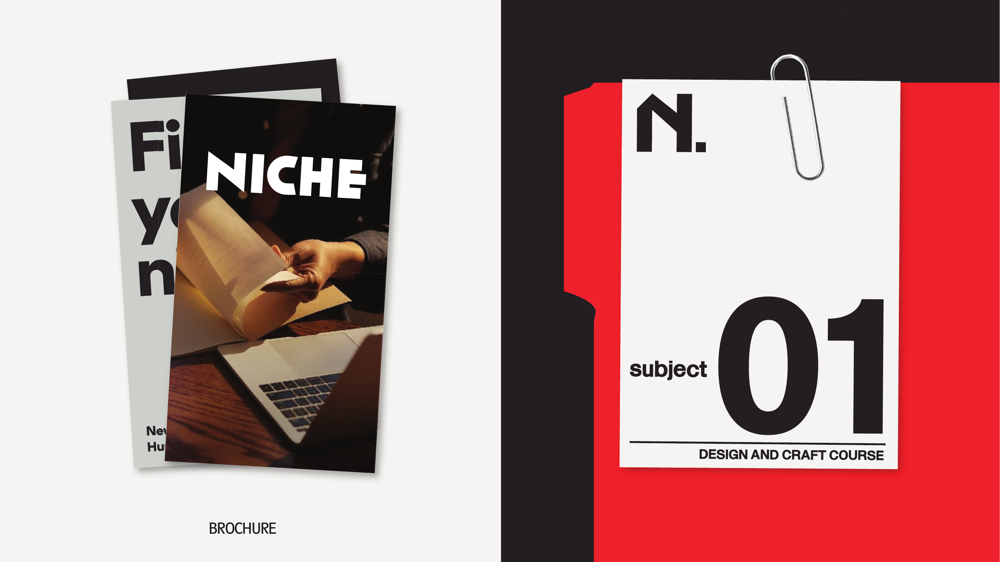
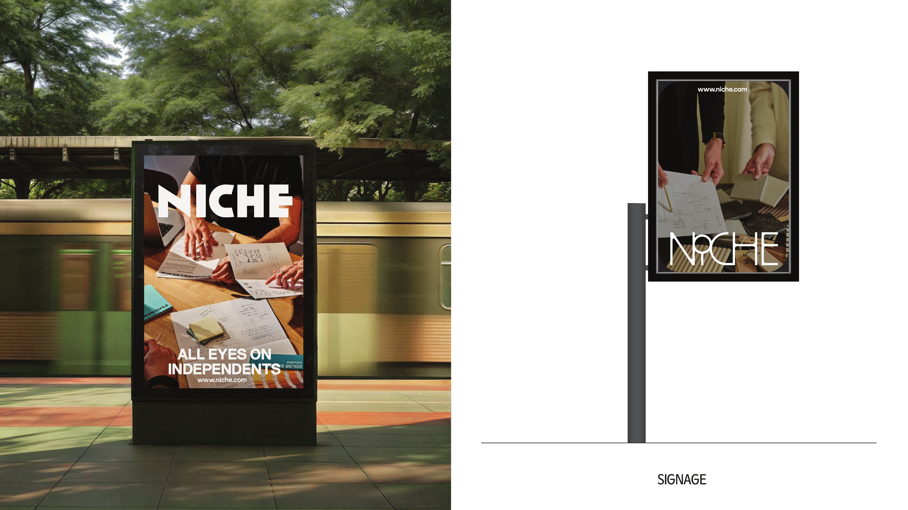
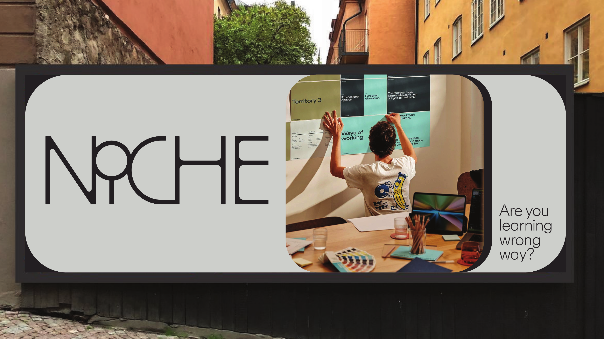
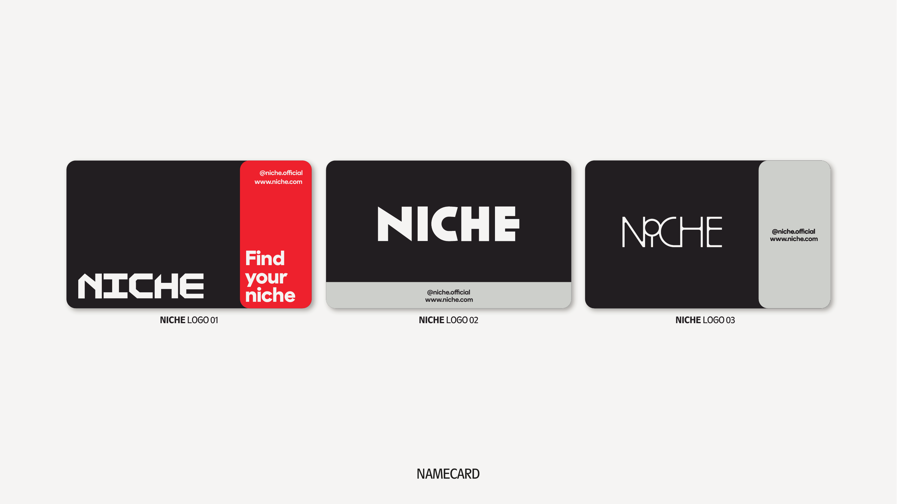
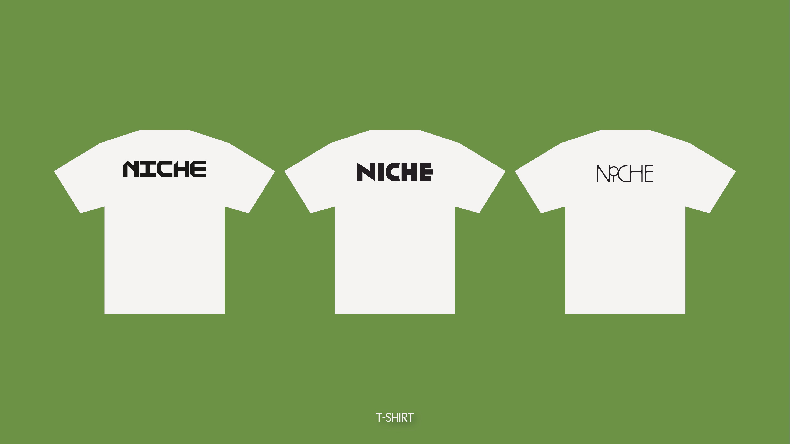

Print & Physical Touchpoints
The brand in the physical world. Brochure, billboard, namecard, t-shirt — each with its own rules for layout, scale, and color.
The most detailed touchpoint. The whole system in one artifact.

Five seconds. Three words.
Billboard viewers have 5 seconds. NICHE's billboard copy was born for this: "Find your niche" is 3 words. "Are you learning wrong way?" is 6 words. Nothing needs to be longer than that.


Three card designs. One per logo option.
Each namecard uses a different logo option, allowing stakeholders to carry the card corresponding to their program's sub-brand. Dark background only — the brand owns the night.

Back of shirt. Center. Logo only.
NICHE t-shirts follow the principle of confident restraint. One logo. Back only. No slogans on the chest. The logo speaks.

Three-panel. One brand block, one photo, one date.

The full color system at work.
Page 18 from the original brief shows the composite layout system — all five brand colors in a multi-tile grid composition. This is the most ambitious application of the NICHE identity.